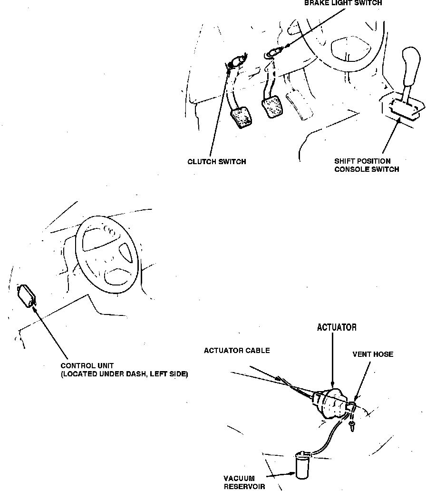

Operation CHARM
: Car repair manuals for everyone.
Home
>>
Acura
>>
1987
>>
Legend Coupe V6-2494cc 2.5L SOHC FI
>>
Repair and Diagnosis
>>
Cruise Control
>>
Cruise Control Servo
>>
Locations
Cruise Control Servo: Locations
Cruise Control Components.:

RH Front Of Engine Compartment
Applicable to: 1987 Legend